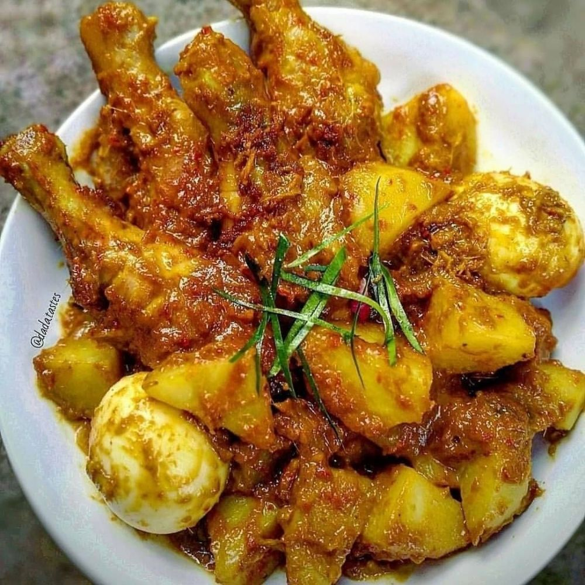

Rendang Paha Ayam Rendang
Rendang Paha Ayam Rendang
Bahan - bahan:
- 4 paha ayam organik
- 2 buah kentang potong
- potong
- 2 butir telur rebus
- 1 lembar daun kunyit iris
- 4 lembar daun jeruk
- 2 lembar daun salam
- 1 bungkus kerisik(kelapa parut kering)
- 200 ml santan + air
- Garam, perasan dan gula malaka
Bahan halus:
- 8 butir bawang merah
- 3 butir bawang putih
- 1 cm kunyit
- 1 cm jahe
- 1 cm lengkuas
- 2 batang serai
- 3 buah cabai rawit
- 3 buah cabai merah
Cara membuat:
- Goreng kentang sisihkan.
- Panaskan minyak tumis bahan halus sampai kering dan pecah minyak.
- Masukkan ayam tumis sebentar kemudian masukkan santan dengan air aduk rata.
- Masukkan kerisik,daun jeruk,daun salam, dan daun kunyit.
- Kemudian masukkan kentang dan telur rebus tambahkan garam, gula malaka dan perasa.
- Masak dengan api kecil sampai air kering,jika ingin berkuah jangan masak sampai kering.